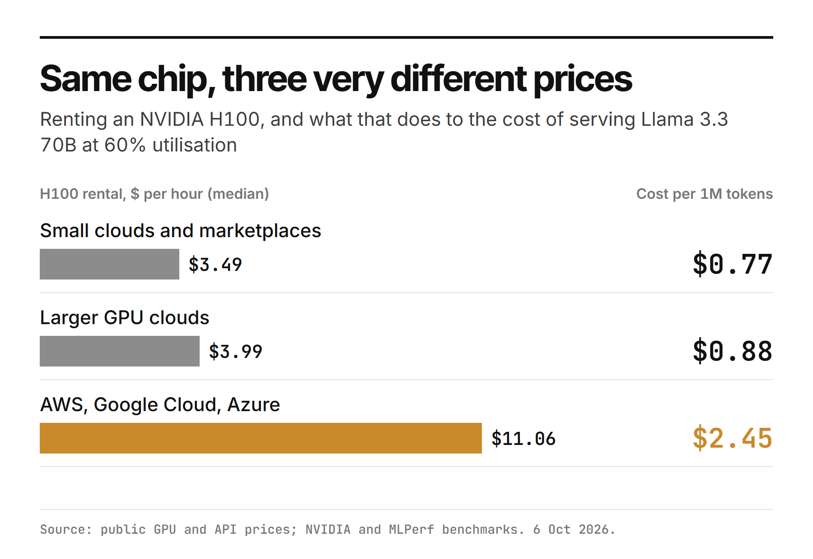
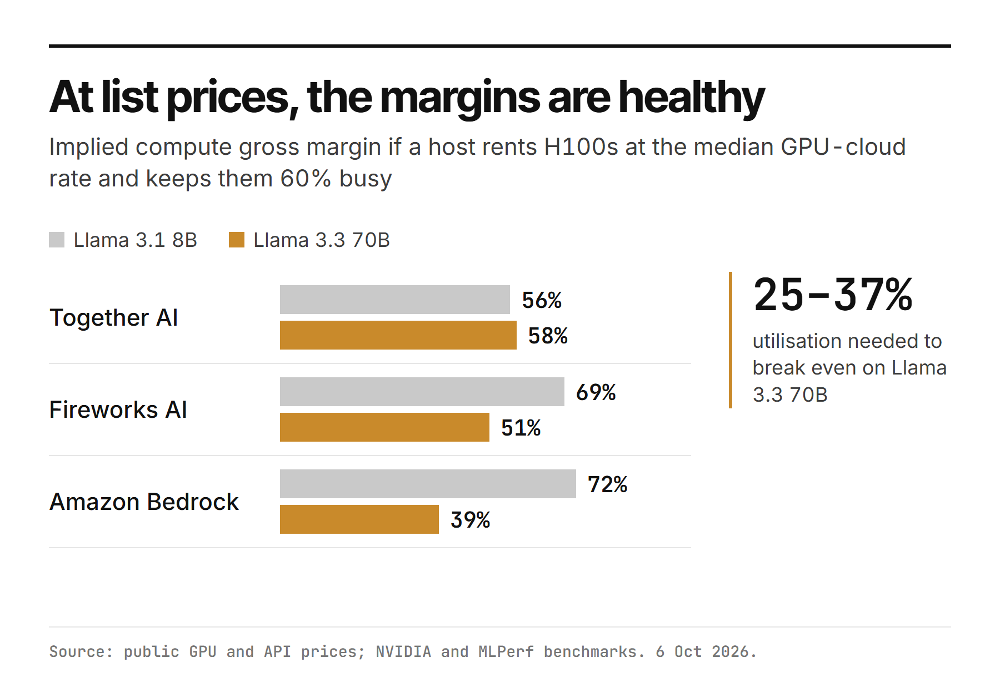
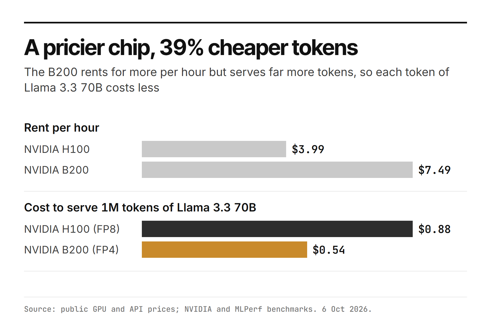
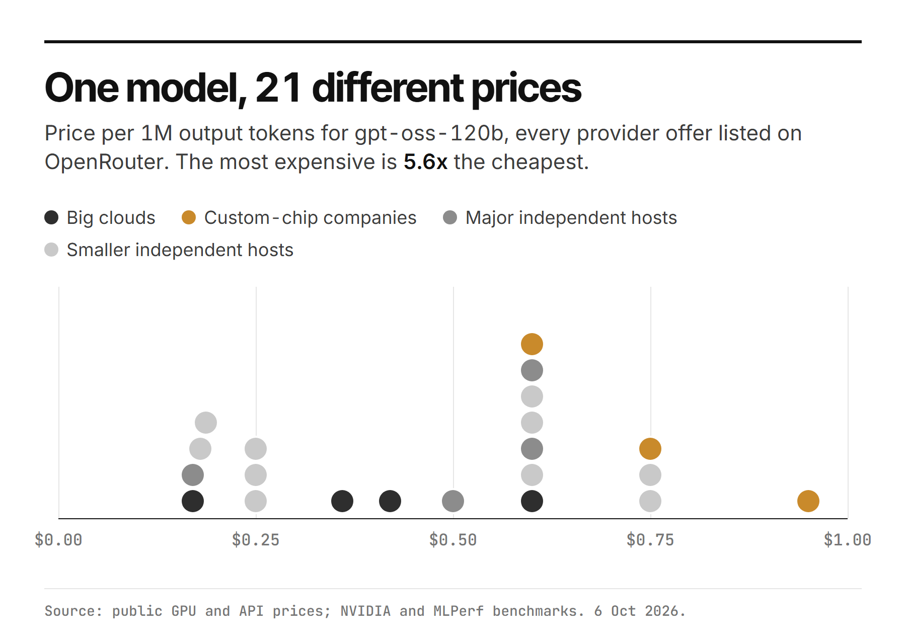
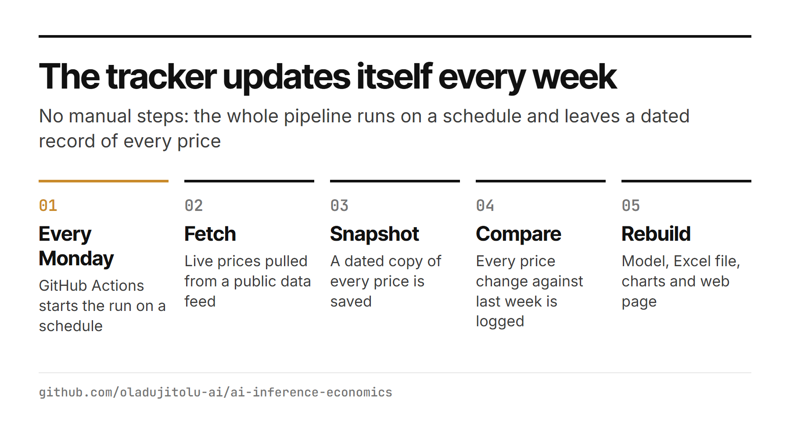

Tolu Oladuji · October 2026 · LinkedIn · Code and data
A fully sourced, self-updating model of LLM inference unit economics. It combines GPU rental prices from 22 providers (hyperscalers, GPU clouds, small clouds and marketplaces), published serving benchmarks and API list prices from big and small hosts, then works out the cost to serve a request, each host's implied gross margin and the GPU utilisation needed to break even. All inputs are public and cited.
On a rented H100 at the GPU-cloud median rate ($3.99 an hour) and 60% utilisation, serving costs about $0.12 per million output tokens for Llama 3.1 8B and $0.88 for Llama 3.3 70B: roughly 7x more for the larger model.
The same H100 rents for a median $3.49 an hour across 15 small GPU clouds and marketplaces, $3.99 at the larger GPU clouds and $11.06 on demand at AWS, Google Cloud and Azure. At the hyperscaler rate the 70B model costs $2.45 per million output tokens, above every host's list price, so nobody selling at these prices is renting hyperscaler capacity on demand.
A host renting GPU-cloud H100s at 60% utilisation would earn implied compute gross margins of 56-72% on Llama 3.1 8B and 39-58% on Llama 3.3 70B at Together AI, Fireworks AI and Amazon Bedrock list prices. Break-even utilisation for 70B is only 25-37%, so the risk is idle capacity, not price.
Across 21 providers and 36 offers on OpenRouter, smaller independent hosts price Llama 3.3 70B at a median $0.50 per million output tokens, against $0.72 at the big clouds. At those prices all 3 long-tail offers are below cost on rented H100s, even at small-cloud rates; on B200-class GPUs the same prices earn 18-39%. For small players, hardware generation is the business model.
On a B200 running FP4, 70B serving falls to $0.54 per million output tokens, 39% cheaper than on H100, even though the B200 rents for more ($7.49 an hour). Implied margins at the big hosts' prices rise to 63-74%.
gpt-oss-120b has 21 offers ranging from $0.17 to $0.95 per million output tokens, a 5.6x spread. The big hosts cluster at $0.60, the long tail undercuts them (median $0.42), and custom-chip providers charge the most (median $0.75), likely a premium for speed.
DeepInfra's Llama 3.3 70B Turbo price would need 126% utilisation of rented H100s to break even, which is impossible. That points to owned or contracted capacity, more aggressive optimisation (the Turbo variants are not defined on the pricing page), or market-share pricing.
Published prices for OpenAI, Anthropic and Google models span $0.10-$10 per million input tokens and $0.50-$50 per million output tokens, a 100x spread at the output price.




Every offer on OpenRouter for the same three models, costed on small-cloud / marketplace GPUs (the cheapest realistic rented capacity) at 60% utilisation.
| Model | Segment | Offers | Median $/1M out | Range | Median implied margin | Below cost |
|---|---|---|---|---|---|---|
| Llama 3.1 8B | hyperscaler / big cloud | 2 | $0.25 | $0.22-$0.29 | 75% | 0 |
| Llama 3.1 8B | custom chips | 1 | $0.08 | $0.08-$0.08 | 17% | 0 |
| Llama 3.1 8B | major independent host | 1 | $0.04 | $0.04-$0.04 | -80% | 1 |
| Llama 3.1 8B | long-tail independent host | 1 | $0.05 | $0.05-$0.05 | -54% | 1 |
| Llama 3.3 70B | hyperscaler / big cloud | 3 | $0.72 | $0.71-$2.25 | 46% | 0 |
| Llama 3.3 70B | custom chips | 2 | $0.84 | $0.79-$0.90 | 43% | 0 |
| Llama 3.3 70B | major independent host | 2 | $0.68 | $0.32-$1.04 | -11% | 1 |
| Llama 3.3 70B | long-tail independent host | 3 | $0.50 | $0.40-$0.52 | -7% | 3 |
| gpt-oss-120b | hyperscaler / big cloud | 4 | $0.39 | $0.17-$0.60 | 36% | 1 |
| gpt-oss-120b | custom chips | 3 | $0.75 | $0.60-$0.95 | 67% | 0 |
| gpt-oss-120b | major independent host | 4 | $0.55 | $0.17-$0.60 | 55% | 1 |
| gpt-oss-120b | long-tail independent host | 10 | $0.42 | $0.18-$0.75 | 30% | 2 |
GPU-cloud median rate, 60% utilisation. Requests of 1,000 input + 1,000 output tokens, except gpt-oss-120b (output only).
| Model | Host | Host's model | List $/1M (in / out) | Gross margin | Break-even util. |
|---|---|---|---|---|---|
| Llama 3.1 8B | DeepInfra | Meta-Llama-3.1-8B-Instruct-Turbo | $0.020 / $0.040 | -105% | 123% |
| Llama 3.1 8B | Together AI | Llama 3 8B Instruct Lite | $0.140 / $0.140 | 56% | 26% |
| Llama 3.1 8B | Fireworks AI | Size-based tier: 4B-16B parameters (e.g. Llama 3.1 8B) | $0.200 / $0.200 | 69% | 18% |
| Llama 3.1 8B | Amazon Bedrock | Llama 3.1 Instruct (8B) | $0.220 / $0.220 | 72% | 17% |
| Llama 3.3 70B | DeepInfra | Llama-3.3-70B-Instruct-Turbo | $0.100 / $0.320 | -110% | 126% |
| Llama 3.3 70B | Amazon Bedrock | Llama 3.3 Instruct (70B) | $0.720 / $0.720 | 39% | 37% |
| Llama 3.3 70B | Fireworks AI | Size-based tier: >16B parameters (e.g. Llama 3.3 70B) | $0.900 / $0.900 | 51% | 29% |
| Llama 3.3 70B | Together AI | Llama 3.3 70B | $1.040 / $1.040 | 58% | 25% |
| Llama 3.3 70B on next-gen B200 | DeepInfra | Llama-3.3-70B-Instruct-Turbo | $0.100 / $0.320 | -28% | 77% |
| Llama 3.3 70B on next-gen B200 | Amazon Bedrock | Llama 3.3 Instruct (70B) | $0.720 / $0.720 | 63% | 22% |
| Llama 3.3 70B on next-gen B200 | Fireworks AI | Size-based tier: >16B parameters (e.g. Llama 3.3 70B) | $0.900 / $0.900 | 70% | 18% |
| Llama 3.3 70B on next-gen B200 | Together AI | Llama 3.3 70B | $1.040 / $1.040 | 74% | 16% |
| gpt-oss-120b (MoE) | Together AI | gpt-oss-120B | $0.150 / $0.600 | 49% | 30% |
| gpt-oss-120b (MoE) | Fireworks AI | OpenAI GPT OSS 120B | $0.150 / $0.600 | 49% | 30% |
| gpt-oss-120b (MoE) | Groq | openai/gpt-oss-120b | $0.150 / $0.600 | 49% | 30% |
| gpt-oss-120b (MoE) | Amazon Bedrock | gpt-oss-120b | $0.150 / $0.600 | 49% | 30% |
The project updates itself. One command (python refresh.py) pulls live per-provider prices from OpenRouter's public API, saves a dated snapshot, logs every price change against the previous run, then re-runs the model and rebuilds the Excel file, charts, this README and the web page. A GitHub Actions workflow runs it every Monday, so the numbers here stay current without manual work. Sources without a public feed (NVIDIA benchmark tables and some GPU price pages) stay as dated, cited inputs.

Serving cost per request = GPU $/hour ÷ (output tokens/sec per GPU × 3,600 × utilisation) × output tokens. List price per request = input tokens × input price + output tokens × output price. Implied gross margin = 1 − cost ÷ price.